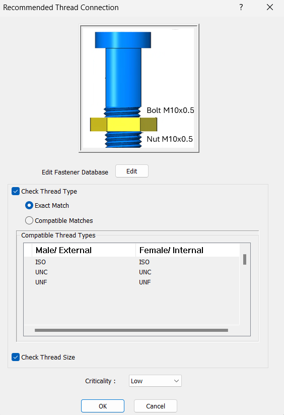
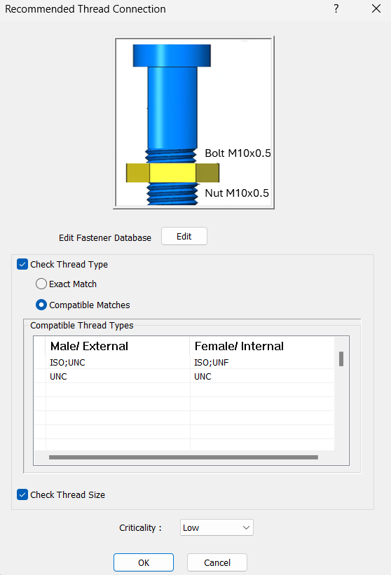
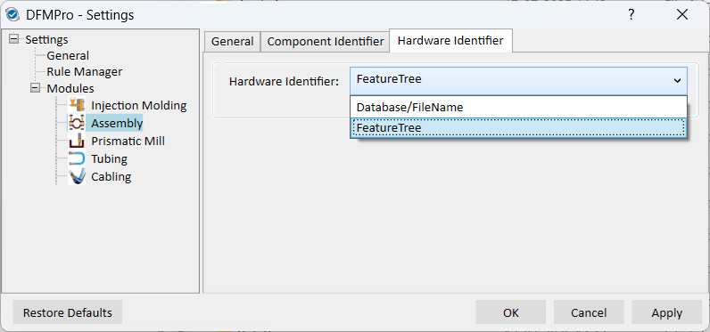
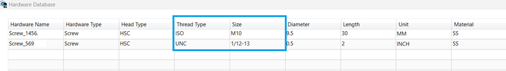
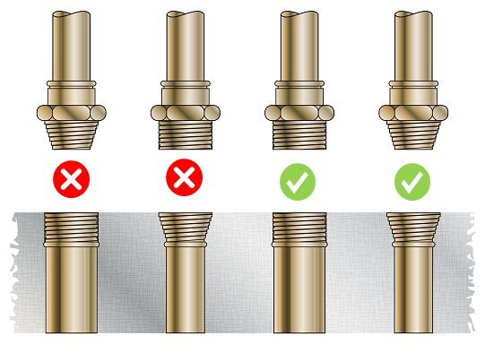
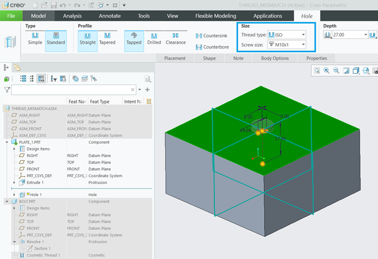
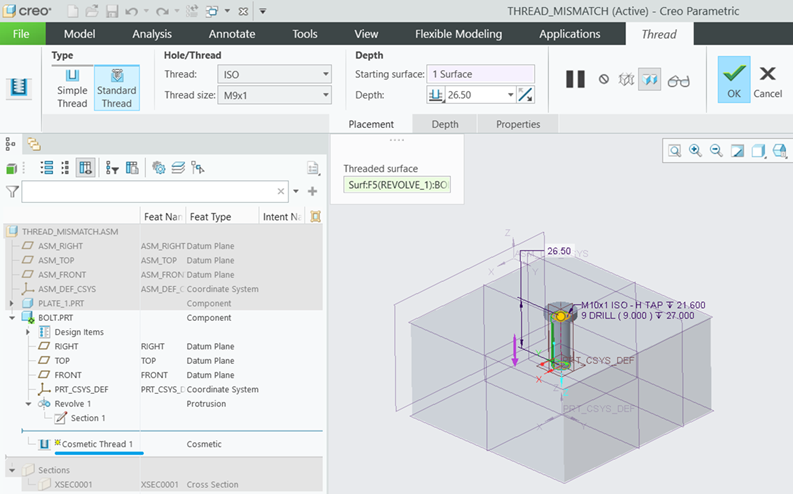
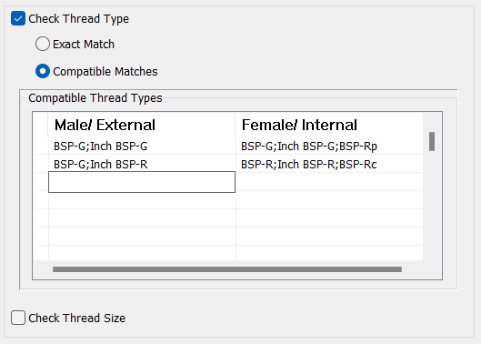
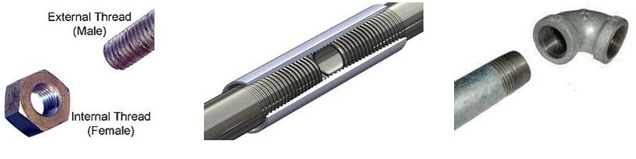

ねじ接続において、雄（外ねじ）側と雌（内ねじ）側のねじは互換性がある必要があります。
このルールは、ねじ接続の雄側と雌側のねじに互換性があるかどうかをチェックします。動作中に不適切な接続、亀裂、応力破断などの問題を避けるため、ねじ接続の雄側と雌側では互換性のあるねじ種類／ねじ形状のみを使用することが推奨されます。
［ルール構成］ウィンドウでは、Check Thread Type チェックボックスと Exact Match ラジオボタンがデフォルトで選択されています。複数のねじ種類が一致した場合、ユーザーは Compatible Matches ラジオボタンを選択できます。表形式の領域では、セミコロン（;）で区切ることで複数のねじ種類を追加できます。
同様に、ユーザーは他のチェックボックスを選択して、ねじサイズおよびピッチのデータを比較できます。


DFMPro は、DFMPro 設定の［アセンブリ］セクションにある Hardware Identifier タブでのユーザーの選択に基づいてファスナーを識別します。ユーザーは、Hardware Identifier として Feature Tree オプションまたは Database オプションのいずれかを選択できます。

Feature Tree オプション：
ユーザーが Feature Tree オプションを選択した場合、このルールは CAD ファイルから雄ねじおよび雌ねじを読み取ります。
Database オプション：
ユーザーが Database オプションを選択した場合、DFMPro は DFMPro データベースからハードウェアを読み取ります。このルールは、DFMPro データベースから雄ねじを読み取り、CAD ファイル（ねじ穴パラメータ）から雌ねじを読み取ります。

|
入力 |
解釈 |
|
M10* |
ねじサイズが M10 で始まる。 |
|
*M10 |
ねじサイズが M10 で終わる。 |
|
*M10* |
ねじサイズに M10 を含む。 |

このルールは次に対して動作します：
ねじ情報を持つネイティブ CAD パーツ。
標準ねじと記号ねじの両方をサポートするルール（以下で説明）。
以下の情報では、このルールがどのように実行されるか、およびサポートされるねじ種類について詳しく説明します。
規格名は、各 CAD システムのねじ定義フィーチャで使用されている名称と正確に一致している必要があります。Creo Parametric の Threaded Hole および Symbolic Thread フィーチャで使用されるねじ規格について、以下の画像の例を参照してください。


互換性のある複数の規格は、セミコロン（;）で区切って名称を記載することで指定できます（以下に例を示します）。

コンポーネント内のすべてのねじフィーチャ（ねじ穴、化粧ねじなど）を、雄側／雌側の双方についてサポートします。

注記:
このルールは、トップレベルのアセンブリパーツで、DFMPro Settings に基づいて実行できます。